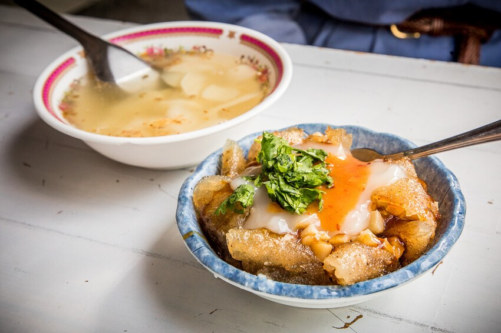
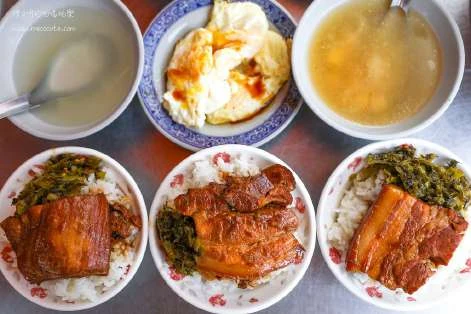

二林市場早餐
從一碗熱食，走進小鎮的早晨。

市場特色
早餐不只是一餐，也是一段觀察在地居民日常的散策。保留原企劃的市場早餐安排，依店家營業情形自由選擇或集中取餐。
延伸認識：肉圓壽
二林市場周邊代表小吃之一。酥炸外皮搭配豬肉、筍丁與醬料，是這間老店的辨識度；可配清湯品嚐。
團體怎麼逛
採小組步行分流，事先集合與點餐；若長輩不便久站，建議先協調取餐。圖片為肉圓壽實景，不代表所有市場店家的早餐。

照片為來源網站之實景紀錄；花況、供餐與活動以場域最新公告及預約確認為準。